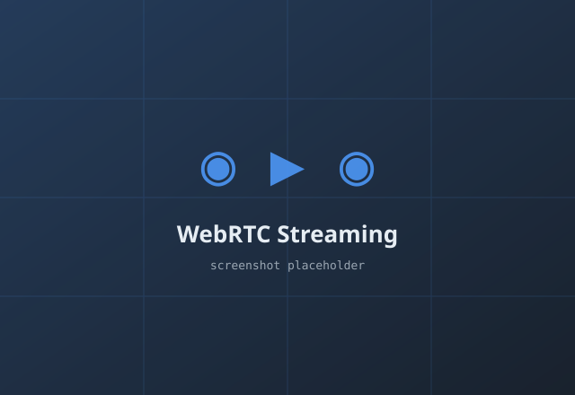

WebRTC Streaming & Classroom Platform
Problem: Remote classrooms needed low-latency, real-time audio/video/text communication plus exams, assignments, and student management.
What I built: A WebRTC-based platform enabling live audio/video/text chat with full classroom workflows — assignments, exams, and student administration.
My role: Lead developer — architecture, signaling, and cross-platform clients.